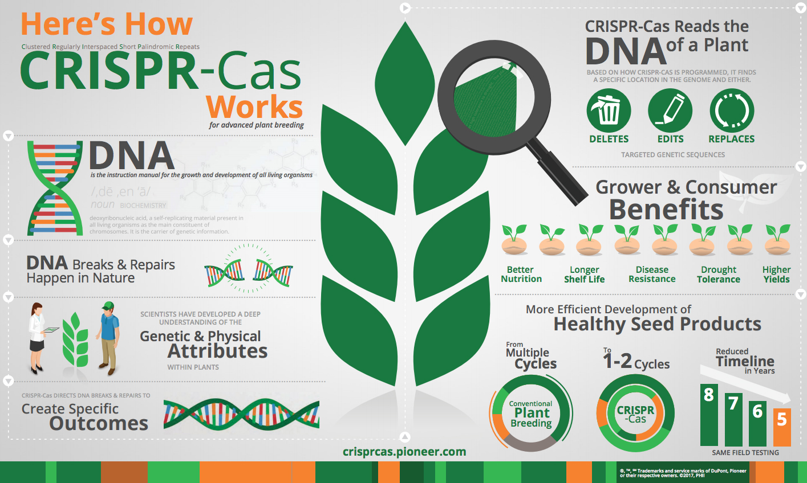

Blog Rooster
Genetische Manipulatie: Mag De Mens Zijn Eigen DNA Veranderen?
Vroeger geloofde iedereen dat genetische manipulatie slechts een mythe was en dat het iets is dat alleen in films echt gebeurt, maar in het afgelopen decennium is deze "mythe" niet alleen werkelijkheid geworden in de films, maar nu ook werkelijkheid in het echte leven. Voordat we zeggen wat we van dit onderwerp vinden, is het erg belangrijk dat je begrijpt waar het onderwerp over gaat. Genetische manipulatie/modificatie is een techniek om de genetische eigenschappen van organismen, zoals planten, dieren en zelfs mensen te veranderen, door een stukje DNA van het ene organisme over te brengen naar een ander organisme. Dit betekent dat de mens zijn eigen genetische code (DNA) verandert met behulp van moderne technieken zoals CRISPR-Cas9, Karyotypering, etc. Ongeacht dat deze nieuwe ontwikkeling biedt hoop op erfelijke ziektes voor de mensen, roept dit toch een heel ethische vraag op: In hoeverre heeft de mens het recht om zijn eigen genetische code te veranderen?
Wat is genetische manipulatie:Zoals wij al weten kunnen mensen hun genetische code veranderen door de DNA van het ene organisme over te brengen naar een ander organisme. Om dit verder uit te leggen: De genetische code (DNA) is het fundament van wie we zijn, het is de stof in ons lichaam die alle erfelijke informatie bevat. Deze code bepaalt hoe ons lichaam zich ontwikkelt (zoals de ogen, hoogte, etc), functioneert en zelfs hoe we ons gedragen. Volgens de website dnaenkanker.nl (een productie van MEDtalks) zijn er twee typen van genetische manipulatie bij de mensen: Somatische- en Kiembaanmutaties.
Somatische mutaties: Iets dat in het lichaam ontstaat op een bepaald moment in een enkele lichaamscel en dus betrekking heeft op de cellen van een individueel lichaam. Deze mutatie wordt niet doorgegeven aan de toekomstige generatie en is hierdoor niet erfelijk. Somatische mutaties worden meestal gebruikt bij de behandeling van een erfelijke ziekte zoals taaislijmziekte.
Kiembaanmutaties: Dit is in principe het tegenovergestelde van somatische mutaties. Bij kiembaanmutaties wordt de embryo manipuleren in plaats van de cellen en hierdoor is deze mutatie blijvend en erfelijk. In tegenstelling tot somatisch mutaties kan deze mutatie in de toekomst gevolgen hebben voor de menselijke soort. Dus in deze blog gaan wij meer over de genetische manipulatie bij de mensen praten.
Het eerste aspect: Genetische manipulatie in de geneeskunde:Genetische manipulatie is iets dat heel ethisch is, maar het kan veel medische voordelen bieden. Voor veel jaren proberen wetenschappers erfelijke ziekten zoals taaislijmziekte, sikkelcelanemie en de ziekte van Huntington te genezen. Uiteindelijk wordt dit mogelijk door nieuwe technologie: De CRISPR kan foutjes in het DNA opsporen en corrigeren: om dit verder uit te leggen als een gen niet werkt, dan wordt dit hersteld m.b.v. de CRISPR. Voor families die al generaties lang met erfelijke ziektes kampen, kan deze doorbraak levensveranderend zijn voor de hele wereld. Toch biedt dit de vraag: Mogen de mensen hun genetische code zomaar veranderen? Is dit moreel correct om te doen?
Is genetische manipulatie moreel of ethisch correct?Als we hier vanuit een ethisch standpunt kijken, zeggen veel mensen dat medische vooruitgang bedoeld is om het leven beter te maken. Als we de technologie hebben om ziekte,pijn of een vroege dood te voorkomen, dan is het moreel verplicht om deze technologie te gebruiken. Toch is genetische manipulatie meer dan alleen een medische behandeling. Een verandering in het DNA van een persoon heeft niet alleen gevolgen voor één persoon, maar wordt ook doorgegeven aan de kinderen en kleinkinderen van die persoon. Daarom is het belangrijk om goed na te denken over wat we wel en niet mogen doen en wie dat mag bepalen.
Mij mening:Het is mijn geloof dat de mens het recht heeft om zijn eigen genetische code aan te passen, omdat het veel medische voordelen heeft voor de toekomst van de wereld. Vooral voor de families die al generaties lang te maken hebben met erfelijke ziektes. Iedereen moet het recht hebben om zelf over zijn lichaam te beslissen. Als we de technologie hebben om pijn en vroegere dood te voorkomen, moeten we dit dus gebruiken. Maar dit recht moet wel beperkt zijn. Dit gaan we argumenteren met behulp van drie deelvragen: Zie in blog 3 . Genetische manipulatie verwijst naar het opzettelijk veranderen van het genetisch materiaal van organismen, zoals planten, dieren en zelfs mensen. Dit kan worden gedaan om eigenschappen van een organisme te verbeteren of te veranderen, bijvoorbeeld door genetisch gemodificeerde gewassen te creëren of door genetische therapieën toe te passen. Genetische manipulatie roept niet alleen wetenschappelijke en technische vragen op, maar heeft ook diepgaande ethische, juridische en maatschappelijke implicaties. In dit antwoord onderzoeken we wat het 'recht' betekent in deze context en welke wet- en regelgeving daarbij een rol speelt.
28-mei-2025 Zackary Cater© Meer Info Voor Jouw. All Rights Reserved. Designed by Mark J.L koopmans